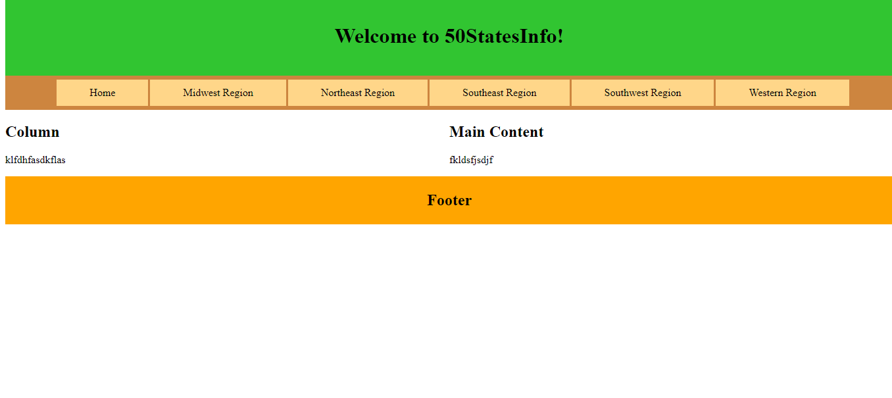
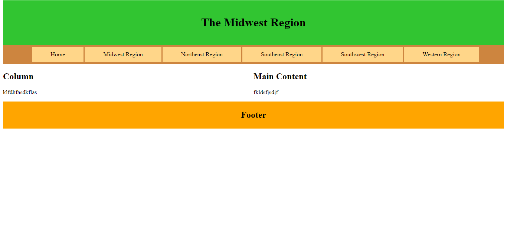
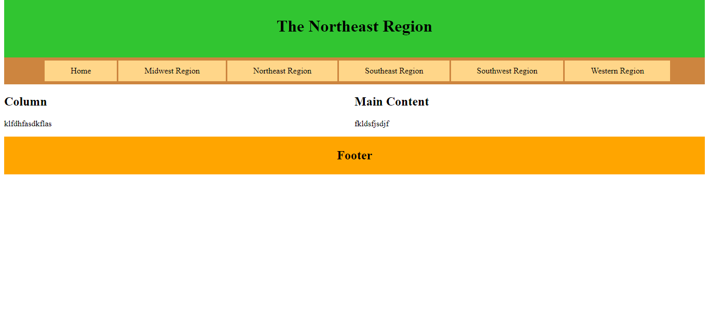
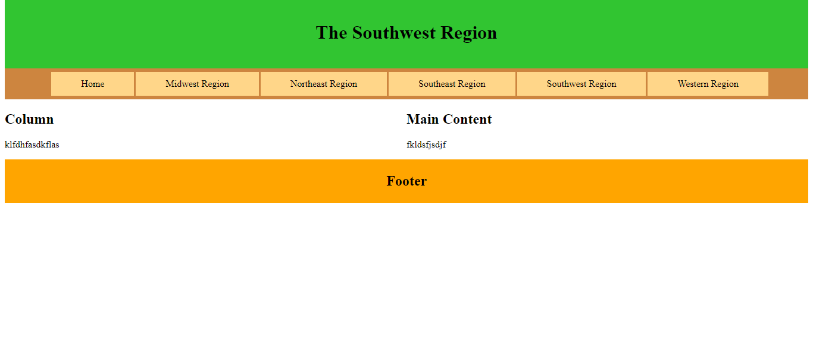
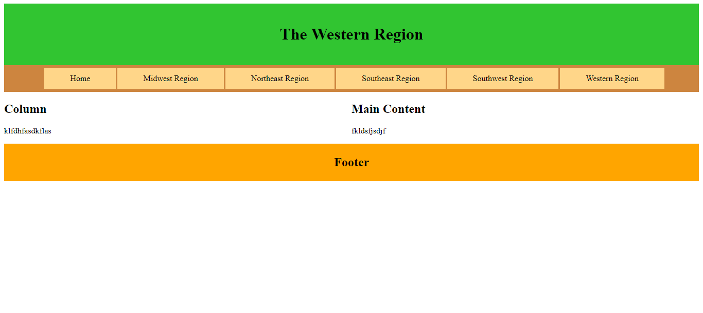
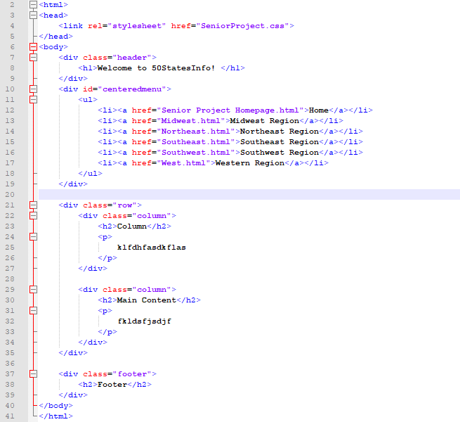
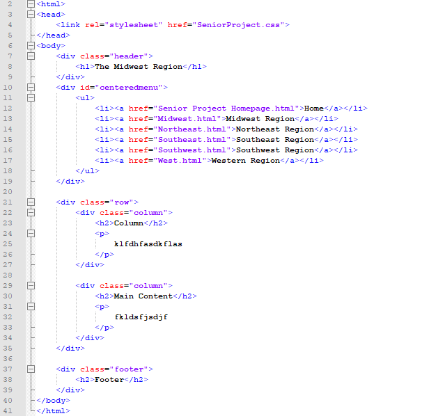
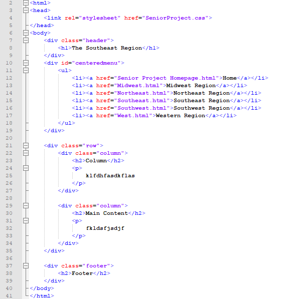
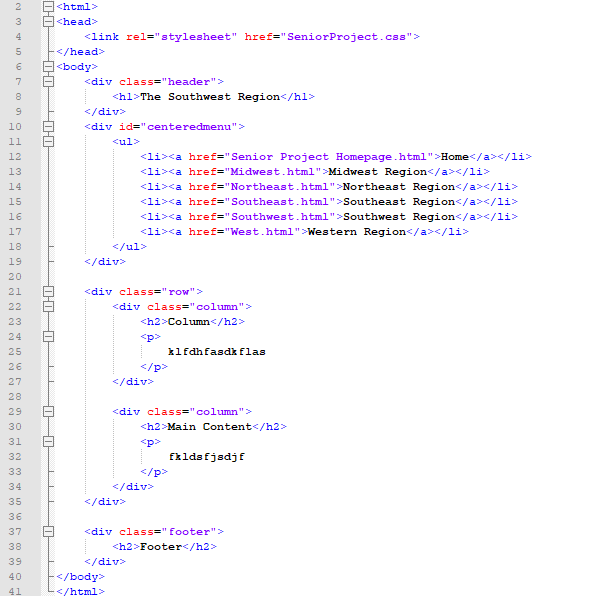
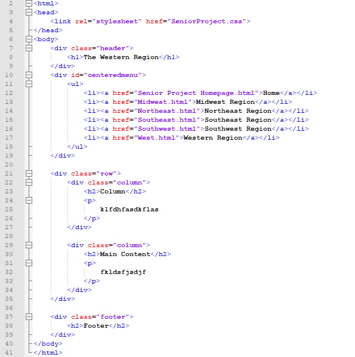

Documentation of the interface
Documentation of the interface
Interface(s) at design time
Homepage:

Midwest Region:

Northeast Region:

Southeast Region:
Southwest Region:

Western Region:

Source code for all modules
Homepage:

Midwest Region:

Northeast Region:
Southeast Region:

Southwest Region:

Western Region:
